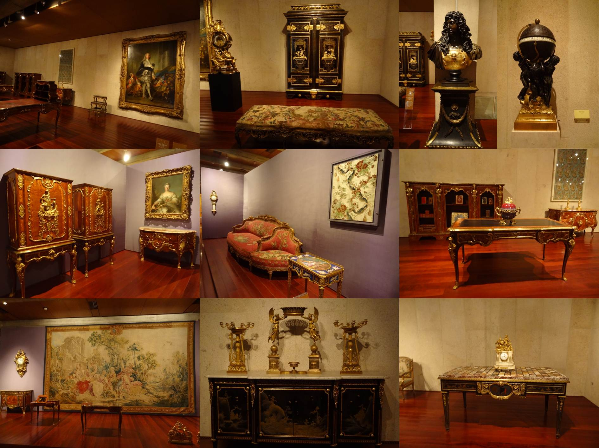
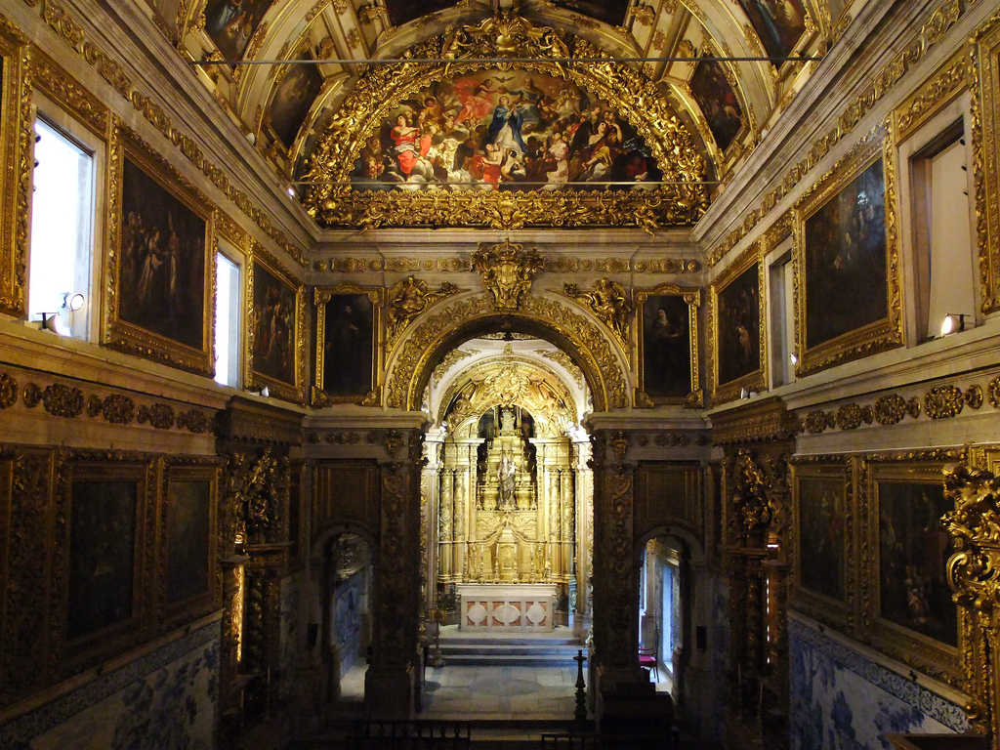
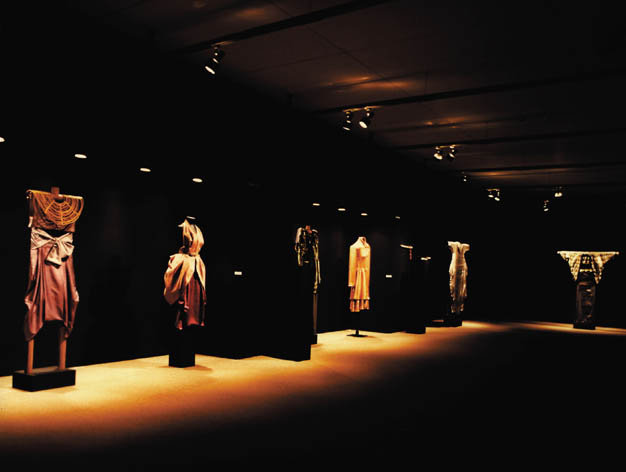
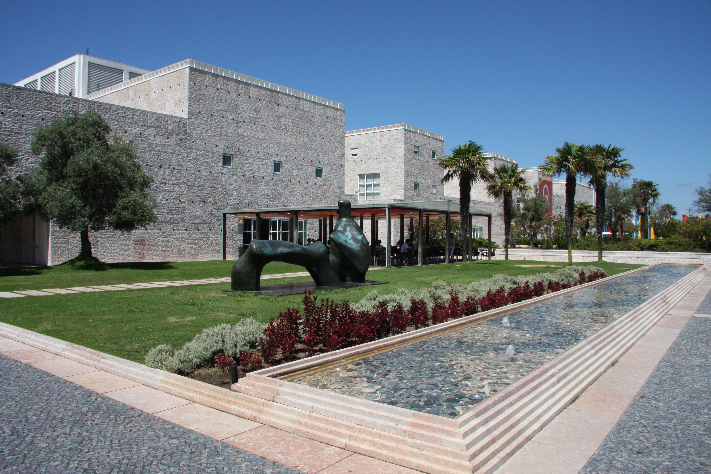
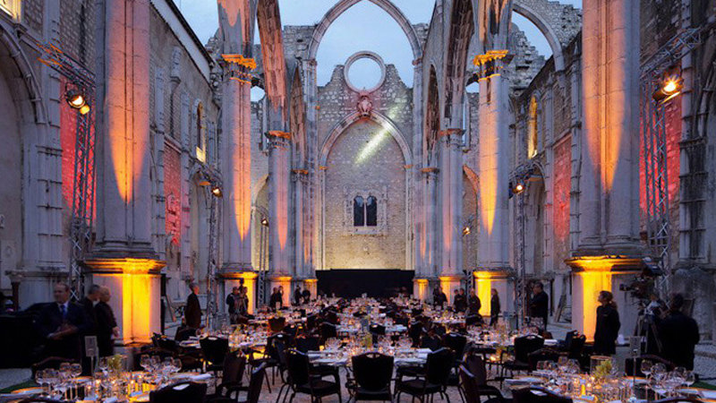

| Description | Image |
|---|
| As expected in a great European capital, Lisbon has a wealth of excellent museums, from the world-class Calouste Gulbenkian Museum to the outstanding Ancient Art Museum, and the more recent and acclaimed Design Museum. |
 |
| There are dozens of public and private collections, many housed in former palaces and convents that would be worth a visit even without their museum displays. That's the case of the Tile Museum and the Decorative Arts Museum, where visitors end up spending much more time than they anticipate. |
 |
| Other museums have some of the world's most valuable collections of their kind like the Coaches Museum and the Maritime Museum in the Belem district, also home to theArchaeology Museum and the lavish collection inside Ajuda Palace. |
 |
| For contemporary Portuguese art there's the Gulbenkian Foundation's Modern Art Center, the Chiado Museum, and the Arpad Szenes - Vieira da Silva Museum, all featuring works by the country's most prominent artists. |
 |
| Also look out for the Berardo Museum, a jaw-dropping collection of modern art with works by the great international artists from Warhol to Picasso inside Belem Cultural Center. A portion of the collection is also on display outside the city in Sintra's Modern Art Museum. |
 |
| Several churches are also home to small but noteworthy collections, like Carmo Church's eclectic archaeological museum, exhibits about the life of the revered saint that was born on the site |
 |